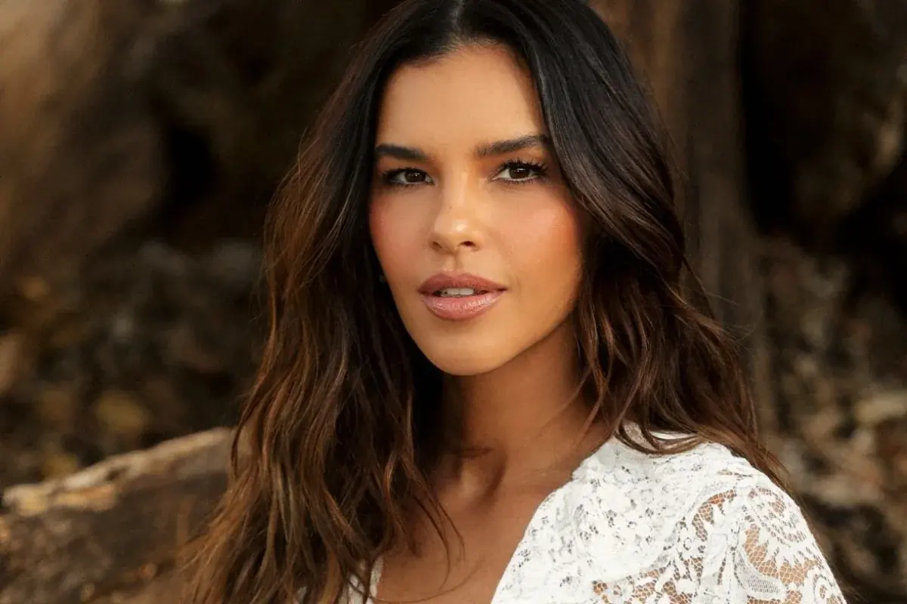
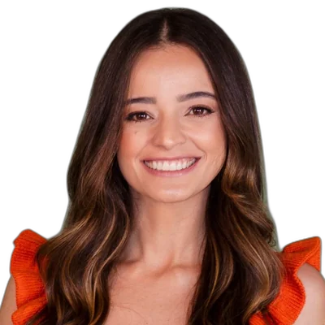
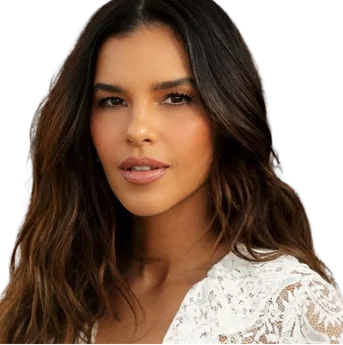
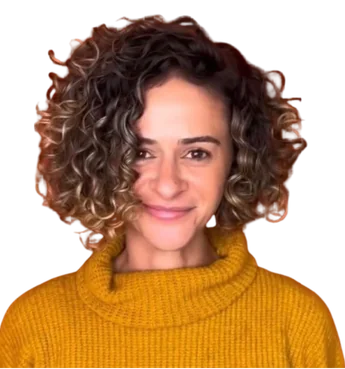
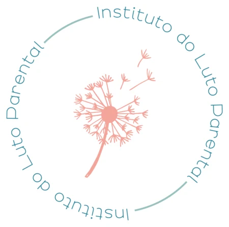

Para quem perdeu no início da gestação ou tentando engravidar
As perdas que quase ninguém vê e que se repetem a cada ciclo também são luto. E merecem espaço.
Quero participar
Onda de Luz · Uma conversa sobre luto parental
Uma conversa aberta e gratuita conduzida por Nathália Tôrres, fundadora da Eva Maternidade, com Mariana Rios e Damiana Angrimani, do Instituto do Luto Parental, sobre o luto de quem perdeu um bebê: em tratamentos e tentativas, na gestação ou depois do nascimento.
15 de outubro, Dia Internacional de Luto pela Perda Gestacional e Infantil
As perdas que quase ninguém vê e que se repetem a cada ciclo também são luto. E merecem espaço.
Quero participarPara ouvir outras histórias, entender o que é comum sentir e saber quando buscar ajuda.
Quero participarPara falar do bebê que veio antes e das formas de guardar a memória dele.
Quero participarTambém é para parceiros, família, amigos, colegas de trabalho e profissionais que querem aprender a acolher.




O Instituto nasceu para acolher famílias que enfrentam a dor da perda gestacional, perinatal, neonatal e infantil. Atua para acolher, informar e formar profissionais, com rodas de conversa e acompanhamento feito por quem entende do assunto.
O encontro é gratuito.
É online, pelo YouTube. O link chega no seu e-mail e WhatsApp depois da inscrição.
Não. Você pode só ouvir, de forma anônima, sem precisar se identificar. Se quiser, manda perguntas pelo chat.
Sim. Todo luto conta, não importa a semana ou a forma como aconteceu.
O tema é aberto e vai falar de experiências diferentes. Se preferir um espaço mais reservado, as rodas fechadas que acontecem dentro da plataforma da Eva Maternidade separam os grupos por experiência.
Pode. Parceiros, familiares, amigas e profissionais são bem-vindos.
Inscrição gratuita